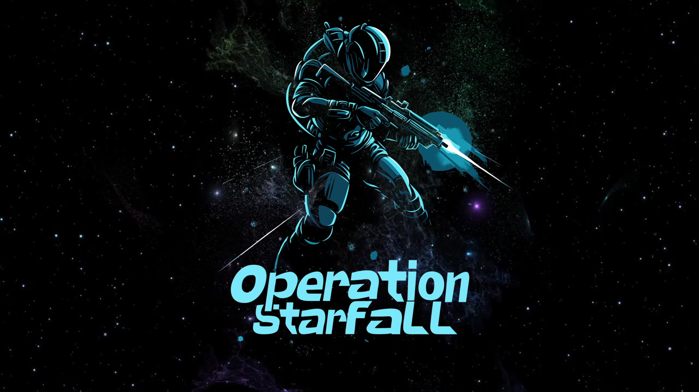

Game Developer | Unreal Engine | C++ | Unity | C#

First Person Shooter built in one month.
Operation Starfall is a first-person shooter set in an orbital space station where players must defend against an invading force bent on sabotaging the station’s systems. Using a complex movement system, futuristic weaponry, and multi-objective gameplay, players must fight off waves of enemies, uncover hidden objects, and fight their way to the control room to stop the invaders.